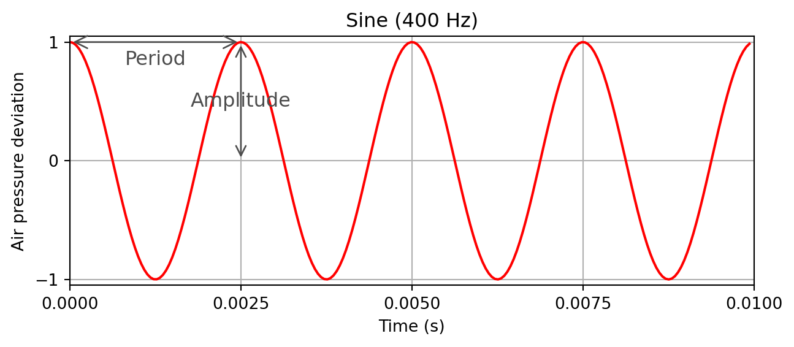
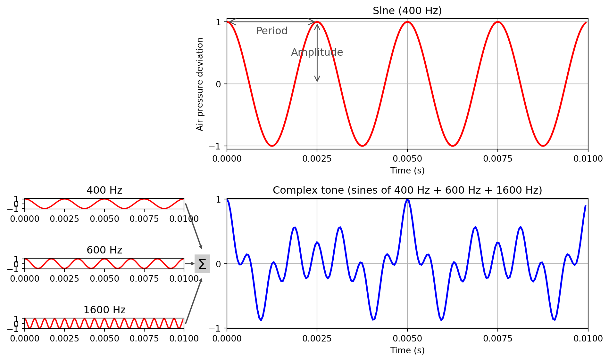

Show the code
import numpy as np
from matplotlib import pyplot as plt import numpy as np
from matplotlib import pyplot as plt ### Define the properties of a sine wave
frequency = 400 # Frequency
duration = 0.01 # Duration of sound
amplitude = 1.0 # Amplitude
phase = 0.75 # Phase
Fs = 22050 # Sampling rate (per second)
# This code creates the sine wave with the properties you detailed above
num_samples = int(Fs * duration)
t = np.arange(num_samples) / Fs
x = amplitude * np.sin(2 * np.pi * (frequency * t - phase))
fig, ax = plt.subplots(figsize=(7.5, 2.75))
ax.plot(t, x, color='red')
ax.set_xlabel('Time (s)')
ax.set_title("Sine (400 Hz)")
ax.set_ylabel('Air pressure deviation')
ax.set_ylim([-1.05, 1.05])
ax.set_yticks(np.arange(-1, 1.5, 1.0))
ax.set_xlim([0.0, 0.01])
ax.set_xticks(np.arange(0, 0.0125, 0.0025))
ax.grid()
ax.annotate('', xy=(0.0025, 0), xytext=(0.0025, 1),
arrowprops=dict(arrowstyle='<->', mutation_scale=15,
color='0.3'), size=2)
ax.text(0.0025, 0.5, "Amplitude", size=12,
color='0.3', ha="center", va="center")
ax.annotate('', xy=(0, 1), xytext=(0.0025, 1),
arrowprops=dict(arrowstyle='<->', mutation_scale=19,
color='0.3'), size=2)
ax.text(0.00125, 0.85, "Period", size=12,
color='0.3', ha="center", va="center")
plt.show()
Let’s combine sine waves of different frequency (400, 600, 1600 Hz).
import numpy as np
from matplotlib import pyplot as plt
fig = plt.figure()
fig.set_figheight(6)
fig.set_figwidth(10)
ax1 = plt.subplot2grid(shape=(6, 3), loc=(0, 1), colspan=2, rowspan=3)
ax3 = plt.subplot2grid(shape=(6, 3), loc=(3, 1), colspan=2, rowspan=3)
ax2 = plt.subplot2grid(shape=(6, 3), loc=(3, 0), colspan=1)
ax4 = plt.subplot2grid(shape=(6, 3), loc=(4, 0), colspan=1)
ax5 = plt.subplot2grid(shape=(6, 3), loc=(5, 0), colspan=1)
frequency = 400 # Frequency
duration = 0.01 # Duration of sound
amplitude = 1.0 # Amplitude
phase = 0.75 # Phase
Fs = 22050 # Sampling rate (per second)
num_samples = int(Fs * duration)
t = np.arange(num_samples) / Fs
x = amplitude * np.sin(2 * np.pi * (frequency * t - phase))
ax1.plot(t, x, color='red', linewidth=2.0, linestyle='-')
ax1.set_xlabel('Time (s)')
ax1.set_title("Sine (400 Hz)")
ax1.set_ylabel('Air pressure deviation')
ax1.set_ylim([-1.05, 1.05])
ax1.set_yticks(np.arange(-1, 1.5, 1.0))
ax1.set_xlim([0.0, 0.01])
ax1.set_xticks(np.arange(0, 0.0125, 0.0025))
ax1.grid()
ax1.annotate('', xy=(0.0025, 0), xytext=(0.0025, 1),
arrowprops=dict(arrowstyle='<->',
mutation_scale=15, color='0.3'), size=2)
ax1.text(0.0025, 0.5, "Amplitude", size=12, color='0.3',
ha="center", va="center")
ax1.annotate('', xy=(0, 1), xytext=(0.0025, 1),
arrowprops=dict(arrowstyle='<->', mutation_scale=19,
color='0.3'), size=2)
ax1.text(0.00125, 0.85, "Period", size=12,
color='0.3', ha="center", va="center")
# Combine several sine waves (here are three frequencies)
frequency1 = 400
frequency2 = 600
frequency3 = 1600
duration = 0.01
amplitude = 1.0
phase = 0.75
Fs = 20050
num_samples = int(Fs * duration)
t = np.arange(num_samples) / Fs
x1 = amplitude * np.sin(2 * np.pi * (frequency1 * t - phase)) # 1st sine
x2 = amplitude * np.sin(2 * np.pi * (frequency2 * t - phase)) # 2nd sine
x3 = amplitude * np.sin(2 * np.pi * (frequency3 * t - phase)) # 3rd sine
ax2.plot(t, x1, color='red')
ax4.plot(t, x2, color='red')
ax5.plot(t, x3, color='red')
ax2.set_title("400 Hz")
ax4.set_title("600 Hz")
ax5.set_title("1600 Hz")
ax2.set_xticks(np.arange(0, 0.0125, 0.0025))
ax2.set_xlim([0.0, 0.01])
ax2.set_yticks(np.arange(-1, 1.5, 1.0))
ax4.set_xticks(np.arange(0, 0.0125, 0.0025))
ax4.set_xlim([0.0, 0.01])
ax4.set_yticks(np.arange(-1, 1.5, 1.0))
ax5.set_xticks(np.arange(0, 0.0125, 0.0025))
ax5.set_xlim([0.0, 0.01])
ax5.set_yticks(np.arange(-1, 1.5, 1.0))
fig.subplots_adjust(hspace=.001, wspace=0.5)
# Combine all three (sum and divide by 3 to keep the amplitude as original)
x123 = (x1+x2+x3)/3
ax3.plot(t, x123, color='blue', linewidth=2.0, linestyle='-')
ax3.set_xlabel('Time (s)')
ax3.set_title("Complex tone (sines of 400 Hz + 600 Hz + 1600 Hz)")
ax3.set_ylabel('')
ax3.set_ylim([-1.01, 1.01])
ax3.set_xlim([0, 0.01])
ax3.set_xticks(np.arange(0, 0.0125, 0.0025))
ax3.set_yticks(np.arange(-1, 1.5, 1.0))
ax3.grid()
fig.tight_layout()
ax2.annotate('', xy=(1.11/100, -9.3), xytext=(1.01/100, 0),
arrowprops=dict(width=0.5, headlength=3, headwidth=3,
color='0.3'), size=2, annotation_clip=False)
ax4.annotate('', xy=(1.063/100, 0), xytext=(1.01/100, 0),
arrowprops=dict(width=0.5, headlength=3, headwidth=3,
color='0.3'), size=2, annotation_clip=False)
ax5.annotate('', xy=(1.11/100, 9.3), xytext=(1.01/100, 0),
arrowprops=dict(width=0.5, headlength=3, headwidth=3,
color='0.3'), size=2, annotation_clip=False)
ax4.text(1.09/100, -0.6, r'$\sum$', size=9, backgroundcolor='0.8')
plt.show()